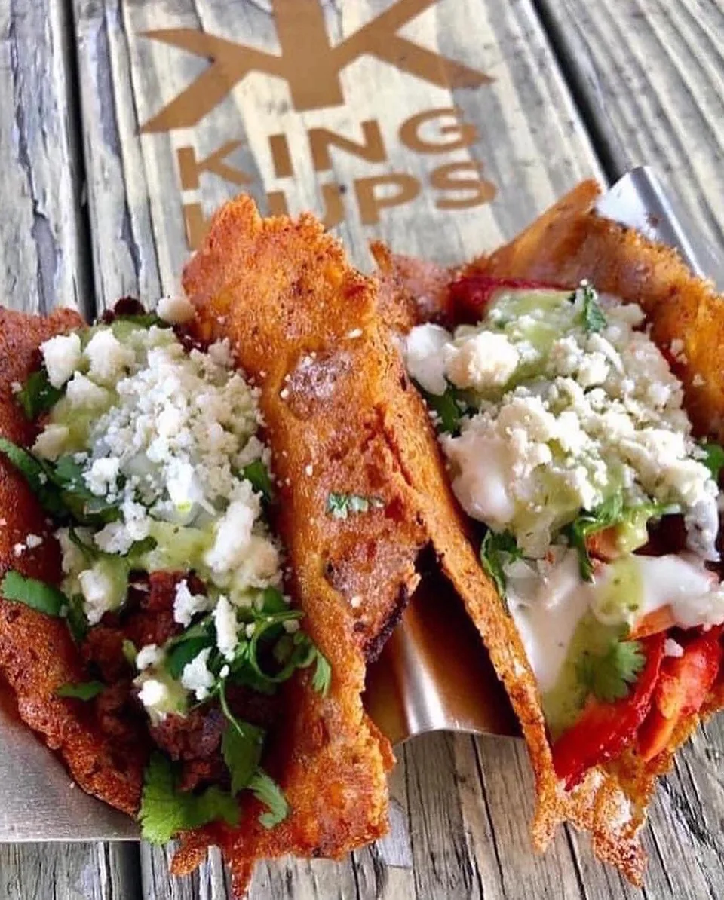
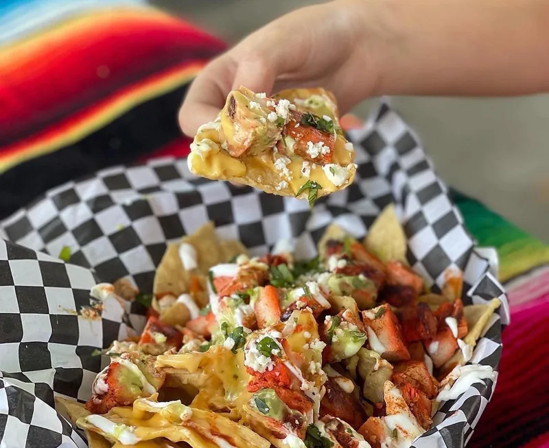
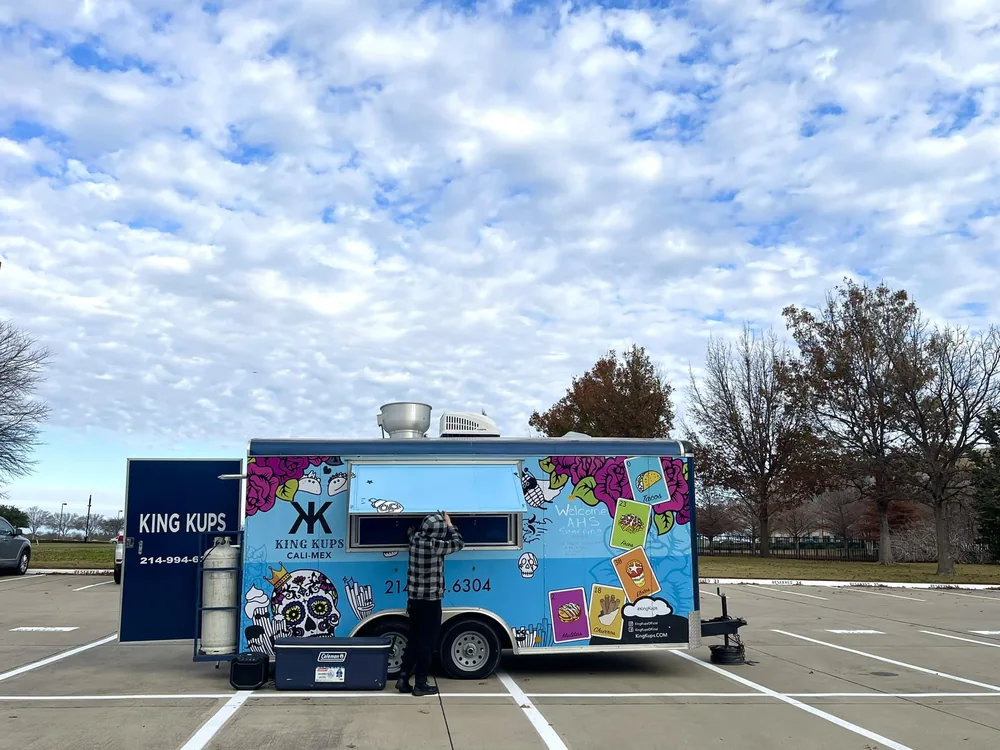

The King Kups signature
Fried Birria
Wontons.
Birria takes a crispy detour. A distinctive King Kups creation, featured by Visit McKinney.
McKinney, Texas · Cali-Mex food truck
Birria. Elote. Carne asada fries.
Come hungry. Let’s eat.

01 / Start here
Small truck. Serious cravings.
California influence. A McKinney address. And a few very good reasons to make the trip.

The King Kups signature
Birria takes a crispy detour. A distinctive King Kups creation, featured by Visit McKinney.
Tacos with consommé. Start here if birria brought you to the truck.
A loaded tray. A street-corn cup. There’s a reason these show up in the local favorites.
Menu items can vary. Call the truck for today’s lineup.
03 / Behind the window
California roots. Texas home.

Before the truck, there were DJ sets and late-night taco runs. Trips to California gave Frank Hernandez another idea.
He opened King Kups with his daughter, bringing that West Coast influence to McKinney. Today, birria, elote and Cali-Mex street food are the reason to pull up.
Read the story in the Dallas Observer (opens in a new tab)04 / Catering & events
Take the craving off-site.
You bring the people.
Let’s talk about the food.
Planning an event? King Kups offers catering. Share your date, location and guest count to talk through the menu, availability and a quote.
05 / Find the truck
McKinney, Texas
A food truck moves. Check the latest updates
before you make the trip.
The McKinney stop
202 N Central ExpyBehind the Exxon near US 75
and Virginia Parkway.
Saturday listings differ. Hours and location can change for events, weather or sellouts. Confirm today’s service on Facebook or by phone.
Schedule reference: Google Maps (opens in a new tab). Checked Oct. 7, 2026.
Check the official feed for schedule changes, events and what’s happening at the truck.
Latest truck updates (opens in a new tab)Follow @kingkupsofficial (opens in a new tab)Your next stop
Today’s menu. This week’s hours.
Your next event. Let’s talk.